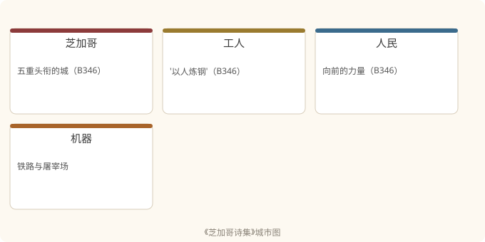

芝加哥诗集
一、基本信息
| 作者 | 卡尔·桑德堡 |
|---|---|
| 成书/出版 | 1916年（Britannica B346：Chicago Poems——1914年组诗刊于Poetry杂志、1916年成书） Carl Sandburg — Encyclopaedia Britannica（百科全书） |
| 国别/地区 | 美国 |
| 时代 | 现当代 · 20世纪10年代 |
| 体裁 | 诗集 |
| 语言 | 英语 |

《芝加哥诗集》城市图（主题·结构图）
二、创作背景
Britannica（B346）：'Chicago'——'Hog Butcher, Tool Maker, Stacker of Wheat, Player with Railroads and Freight Handler to the Nation'——城市即工人、机器与肉。
Britannica（B346）：桑德堡的大萧条诗集 The People, Yes (1936)——'a poetic testament to the power of the people to go forward'。
Britannica（B346）：引文——'Pittsburgh, Youngstown, Gary, they make their steel with men'（Smoke and Steel, 1920——钢是用人炼的）。
三、内容脉络
'芝加哥'：城市的自我命名与辩护（B346：五重头衔——诗中通说待核细节）。
工人、钢铁与'人民'的抒情（B346 语系）。
四、主要人物表
| 人物 | 身份 | 说明 |
|---|---|---|
| 芝加哥 | 被拟人化的城市 | （B346：'Chicago'一诗） |
| '人民' | 集体主角 | （B346：The People, Yes 语系） |
五、主题与艺术特点
- 工业城市的自我辩护（B346：'Chicago'）。
- '人民'的史诗（B346：The People, Yes——'the power of the people to go forward'）。
- 以人炼钢（B346：'they make their steel with men'）。
六、影响与评论
- Britannica：芝加哥诗歌传统的命名之作（B346 定位）。
Carl Sandburg — Encyclopaedia Britannica（百科全书） - Britannica：Lincoln: The War Years 获1940普利策历史奖（B346）。
Carl Sandburg — Encyclopaedia Britannica（百科全书）
七、阅读建议
难点
- 自由体的工业节奏。
- 芝加哥屠宰场与铁路史。
- 《芝加哥诗集》中译本（人民文学等——通说待核）。
- 英文原版。
桑德堡首选；后接《钢与烟》《人民，是的》。
八、待核实
- 'Chicago'全诗引文核对（五重头衔原文B346已载）。
- 1914年 Poetry 杂志首发期数待核。
- 与惠特曼传统的比较说法待核。
本页主要来源
卡尔·桑德堡的其他收录作品：芝加哥诗集